조경기사 (2013-09-28 기출문제)
1과목: 조경사
1. 다음 중 우리나라의 서원조경에 대한 설명으로 옳지 않은 것은?
- 학문연구와 선현제향을 위해 설립된 사설교육기관이며 향촌자치기구이다.
- 일반적으로 산수가 수려한 곳에 입지하고 있다.
- 기능에 따라 진입공간, 강학공간, 제향공간, 부속공간으로 구성되어 있다.
- 시각적 정취를 위해서 비구를 만들어 정원내에 물을 도입하고 있다.
(정답률: 71%)

2. 다음 설명하는 정원은?
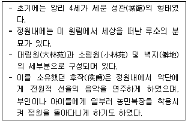
- 에름논빌(Ermononville)
- 보르비콩트(Vaux-le-Viconte)
- 프티 트리아농(Petit Trianon)
- 말메이존(Malmaison)
(정답률: 60%)
3. 다음중 고려시대 이규보의 『동국이상국집』에 나오는 사람이 끌고 다닐수 있는 정자는?
- 장원정
- 상춘정
- 연복정
- 사륜정
(정답률: 88%)
4. 교태전 동쪽에는 대비전인 자경전이 위치하고 이곳의 꽃담에는 십장생 무늬가 장식되어 있다. 다음 중 십장생이 아닌 것은?
- 용
- 산
- 학
- 해
(정답률: 73%)
5. 고대 그리스의 아카데미 주변에 조성된 철인(哲人)의 가로에 식재된 녹음수 수종은?
- 플라터너스
- 포플러
- 소나무
- 대추야자
(정답률: 72%)
6. Birkenhead Park에 관련된 내용이 아닌 것은?
- James Pennethorne가 설계
- 공원 경계부에 택지조성으로 공원건설의 재정 지원
- F.L.Olmsted의 공원개념에 큰 영향
- 도시공원설립의 계기
(정답률: 74%)
7. 다음 정원 시설물 중 불교사상과 관계가 없는 것은?
- 망주석
- 삼존석
- 배례석
- 좌선석
(정답률: 67%)
8. 다음 중 정자(亭子)내 방의 위치가 다른 곳은?
- 소쇄원
- 다산초당
- 명옥헌
- 임대정
(정답률: 55%)
9. 레프턴이 완성시켜 놓은 영국풍경식 조경수법은 자연을 어떤 비율로 묘사해 놓았는가?
- 1 : 1
- 1 : 2
- 1 : 10
- 1 : 100
(정답률: 76%)
10. 명나라 시대의 “원야(園冶)”3권은 정원서적으로 유명하다. 그 관련된 설명이 옳지 않은 것은?
- 일명 탈천공(奪天工)이라고도 한다.
- 저자는 문진형(文震亨)이다.
- 제1권은 흥조론(興造論)과 원설(園設)로 나누어 저술하였다.
- 제2권은 난간(欄干)에 관하여 저술하였다.
(정답률: 86%)
11. 연암 박지원의 열하일기(熱河日記)의 배경이 된 중국의 “열하피서산장”에 대한 설명으로 틀린 것은?
- 만주 승덕에 있는 황제의 여름별장으로 근처에 큰 강이 있어 여름에도 서늘한 기상조건을 보인다.
- 강희제(康熙帝)는 산장 속의 경관 좋은 36곳을 골라 시를 지어 궁정화가(宮廷畵家) 침유(沈喩)가 그림을 곁들여 간행하였다.
- 피서산장내의 담박경성전(澹泊敬誠殿)은 황와(黃瓦)와 홍주(紅柱)로 이루어진 궁전식 누각이다.
- 피서, 정치적 회견, 수렵장의 중계지점으로서의 존재 가치가 높았다.
(정답률: 54%)
12. 다음 중 직선과 곡선을 혼용한 원지(苑池)는?
- 경주의 월지(안압지)
- 경복궁의 경회루지
- 창덕궁의 몽답정지
- 창덕궁의 애련지
(정답률: 80%)
13. Cloister Garden에 대한 설명으로 옳지 않은 것은?
- 교회 건물의 남쪽에 위치한 네모난 공지
- 흉벽(parapet)이 있는 중정
- 원로의 교차점인 중정 중앙에는 로타르라는 연못 설치
- 2개의 직교하는 원로(園路)에 의해 4분
(정답률: 73%)
14. 이집트를 상(上)이집트와 하(下)이집트로 구분할 때 각각 상징하는 식물의 연결이 올바른 것은?
- 상(上)이집트-장미, 하(下)이집트-아네모네
- 상(上)이집트-연꽃, 하(下)이집트-파피루스
- 상(上)이집트-무화과, 하(下)이집트-석류나무
- 상(上)이집트-아카시아, 하(下)이집트-포도나무
(정답률: 83%)
15. 다음 중 피렌체 메디치장(Villa Medici)에 관한 설명으로 옳은 것은?
- 1450년경 코지모 디 메디치(Cosimo de, Medici)가 조경가 알베르티(Alberti)의 설계에 따라 만들었다.
- 남쪽 사면의 비탈면을 깎아 3개의 단(terrace)을 만들었다.
- 첫째 단에는 빠르테르(parterre)를 만들고 3번째 단위 최상단에는 카지노(casino)를 두었다.
- 첫째 단의 정원은 중앙에 축을 두고 조경요소를 대칭적으로 배치하고 있다.
(정답률: 39%)
16. 대표적인 일본정원에 관련된 주요 조경요소를 설명한 것중 옳지 않은 것은?
- 오모데센께(表千家)의 불심암(不審庵)정원은 통일감 있고 인공적인 외관이 돋보인다.
- 녹원사(금각사)의 경호지 안에 구산팔해석(야박석)이 배치된 정토경원양식이다.
- 자조사(은각사)의 금경지가에는 모래로 이루어진 은사탄과 향월대가 있다.
- 용안사의 방장 뜰에는 15개의 암석이 동쪽에서 서쪽방향으로 5.2.3.2.3의 석조로 배치되어 있다.
(정답률: 57%)
17. 한국 정원의 특징을 가장 알맞게 설명한 것은?
- 산수경관의 축경화와 조화미
- 산수경관의 실경화(實景化)와 조화미
- 산수경관의 모조화와 강한 대비성
- 산수경관의 축의화(縮意化)와 대칭성
(정답률: 78%)
18. 사랑채 축단 위에 경석을 설치하여 관상의 대상으로 삼은 사대부가는?
- 충남 논산의 윤증고택
- 전북 정읍의 김동수가
- 전남 구례의 운조루
- 경북 달성의 박엽가
(정답률: 59%)
19. 고대로마 포럼(forum)은 주위의 건축군에 따라 유형이 달라지는데, 그 유형에 속하지 않는 것은?
- 일반광장(forum civil)
- 로마광장(forum romannum)
- 시장광장(forum venalia)
- 황제광장(imperial forum)
(정답률: 50%)
20. 시대별 연결이 바르지 않은 것은?
- 1948년-세계 조경가협회 창립
- 1934년-암스테르담의 보스공원개장
- 1872년-엘로스톤 국립공원으로 지정
- 1925년-영국의 국제 정원설계 전시회
(정답률: 58%)
2과목: 조경계획
21. 다음 옥상정원 설치시 고려해야 할 사항 중 가장 영향이 적은 것은?
- 토양 및 수목의 하중
- 배수 및 관수
- 이용자의 하중
- 구조물의 방수
(정답률: 83%)
22. 공원 및 녹지체계의 유형 중 녹지의 연결성과 접근성의 측면에서 바람직하다고 볼 수 있으나, 한정된 녹지가 넓은 면적에 분포하게 되어 녹지의 폭이 좁아지는 단점이 있는 것은?
- 단지내 녹지를 한곳으로 모으는 집중형
- 단지내 녹지를 고르게 분포시키는 분산형
- 일정 폭의 녹지를 길게 조성하는 대상형
- 대상형을 가로, 세로로 겹쳐 놓은 격자형
(정답률: 63%)
23. 국립공원은 누가 지정하고 관리하는가?
- 대통령
- 국무총리
- 국토교통부
- 환경부장관
(정답률: 77%)
24. 공동주거공간 계획시 주거의 쾌적성 및 안전성 확보노력과 관련이 가장 먼 것은?
- 자투리 땅을 이용한 녹지 확보
- 도로위계에 따른 영역성 확보
- 인동간격의 유지
- 완충공간의 확보
(정답률: 73%)
25. 다음 중 조경계획을 위한 분석과정 중 경관분석방법의 분류 형태에 포함되지 않는 것은?
- 생태학적 접근
- 사회학적 접근
- 형식미학적 접근
- 경제학적 접근
(정답률: 38%)
26. 뉴어바니즘(New Urbanism)의 계획이념과 가장 거리가 먼 것은?
- 동일한 주거형태를 이용하여 지역의 명료성을 강조하는 계획
- 보행자를 최대한 고려한 계획
- 도로가 서로 연결된 계획
- 모든 요소를 종합하여 단지의 조화와 유지를 위해 강력한 디자인 코드를 사용하는 계획
(정답률: 65%)
27. 조경용 식물의 생육에 필요한 토양의 깊이(cm)로 가장 적합한 것은?(단, 조경설계기준을 적용한다.)
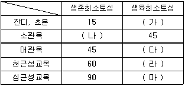
- (가)15 (나)30 (다)45 (라)60 (마)100
- (가)20 (나)20 (다)40 (라)70 (마)120
- (가)30 (나)30 (다)60 (라)90 (마)150
- (가)40 (나)40 (다)80 (라)120 (마)150
(정답률: 79%)
28. 운전은 용이하나 토지이용 측면에서는 가장 비효율적인 주차방식은?
- 45°주차
- 60°주차
- 90°주차
- 평행주차
(정답률: 67%)
29. 도시ㆍ군계획시설의 결정ㆍ구조 및 설치기준에 관한 규칙상 도시지역 외의 지역에 설치하는 청소년수련시설의 구조 및 설치기준으로 올바른 것은?
- 산지에 건축물을 배치하는 경우 평균 경사도가 35도 이하이고 표고가 산자락하단을 기준으로 100미터 이하인 지역으로 할 것
- 건축물은 가급적 외부로부터 격리되고 아늑하고 위요된 지역에 설치할 것
- 건축물의 길이는 경사도가 15도 이상인 산지에서는 50미터 이내로 하고, 그 밖의 지역에서는 100미터 이내로 할 것
- 경사도가 15도 이상인 산지에 건축물 등을 2 이상 설치하는 경우에는 경관ㆍ조망권 등의 확보를 위하여 길이가 긴 것을 기준으로 그 길이의 5분의 1 이상을 이격하도록 할 것
(정답률: 46%)
30. 이용자의 태도조사에 이용되는 리커트 척도(Likert scale)는 다음의 어느 척도 유형에 속하는가?
- 명목척(nominal scale)
- 순서척(ordinal scale)
- 등간척(interval scale)
- 비례척(ratio scale)
(정답률: 78%)
31. 우리나라에서는 용도지역별 도로율은 『도시교통정비 촉진법』에 따른 교통영향분석ㆍ개선대책, 건축물의 용도ㆍ밀도, 주택의 형태 및 지역여건에 따라 적절히 증감할 수 있다. 다음 중 『주거지역』의 도로율은 얼마를 기준으로 하는가?
- 10퍼센트 이상 20퍼센트 미만
- 15퍼센트 이상 25퍼센트 미만
- 20퍼센트 이상 30퍼센트 미만
- 25퍼센트 이상 35퍼센트 미만
(정답률: 44%)
32. 도시공원 및 녹지 등에 관한 법률 상의 『공원녹지』에 해당하지 않는 것은?
- 유원지
- 저수지
- 도시자연공원구역
- 공공공지
(정답률: 40%)
33. 다음 중 조경계획의 일반적인 과정으로 가장 적합한 것은?
- 환경조사-기본계획-개념화-시공계획
- 기본구상-개념계획-적지선정-기본설계
- 기본계획-문헌 및 현지조사-중간검토-종합계획
- 기본조사-기본구상-기본계획-기본설계-실시설계
(정답률: 78%)
34. 조경설계기준상의 공동주택 휴게공간의 평면구성과 관련된 설명으로 옳지 않은 것은?
- 휴게공간은 시설공간, 보행공간, 녹지공간 등으로 구분하여 설계한다.
- 휴게공간의입구는 2개소 이상 배치하되, 1개소 이상에는 12.5% 이하의 경사로로 설계한다.
- 건축물이나 휴게시설 설치공간과 보행공간 사이에는 완충공간을 설치한다.
- 놀이터에서는 휴게보다 놀이에 어린이들이 집중할 수 있도록 휴게시설을 설치하지 않는다.
(정답률: 81%)
35. 다음 중 미기후 현상 중 안개 및 서리는 주로 어느 지역에서 발생하는가?
- 경사가 완만하고 수목이 밀생한 지역
- 지하수위가 낮고 사질양토인 지역
- 수목이 없고 겨울철 북서풍에 노출되는 지역
- 지형이 낮고 배수가 불량한 지역
(정답률: 73%)
36. 토지이용계획을 실현하기 위하여 강제적 수단을 통한 용도지역의 규제내용이 아닌 것은?
- 용도의 규제
- 건폐율의 규제
- 건축물의 높이 제한
- 건축물의 소유권 제한
(정답률: 80%)
37. 자연공원의 공원성(公園性)을 판단하는 기준과 거리가 먼 것은?
- 경관
- 토지소요 관계
- 해발고도
- 교통의 편리 또는 이용객 수용능력
(정답률: 67%)
38. '2차 천이의 산림단계 초기이거나 지속적인 인간간섭하에 놓인 식생형'에 대한 녹지자연도(DGN)의 판정등급은?
- 5
- 6
- 7
- 8
(정답률: 52%)
39. 다음 중 조경계획 및 설계의 3대 분석과정에 해당하지 않는 것은?
- 물리ㆍ생태적 분석
- 환경영향평가 분석
- 사회ㆍ행태적 분석
- 시각ㆍ미학적 분석
(정답률: 77%)
40. 브로드벤트(G. Broadbent)가 설명하는 설계방법론 중 환경심리학 및 생태심리학에 대한 관심이 높아지면서 이용후 평가가 도입되는 등 설계과정에서 순환적 과정으로 발전된 설계방법론에 해당하는 것은?
- 제1세대 설계방법론
- 제2세대 설계방법론
- 제3세대 설계방법론
- 제4세대 설계방법론
(정답률: 55%)
3과목: 조경설계
41. 공간지각의 친밀성은 D/H비와 함께 수평적 거리의 영향을 받는다. 가로50cm, 세로 50cm의 정방향 광장을 친밀한 공간으로 구분한다면 이 광장은 최소 몇 개로 구분되는가?
- 4개
- 25개
- 12개
- 20개
(정답률: 49%)
42. 자연의 생물학적 형태요소가 조형요소를 만드는데 응용한 사례가 아닌 것은?
- 솟대
- 나선형 계단
- 고린도식 기둥의 주두
- 사다리
(정답률: 70%)
43. 다음 설명의 ( )안에 적합한 수치 기준은?
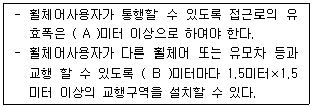
- A : 1.2, B : 25
- A : 1.2, B : 50
- A : 1.5, B : 50
- A : 1.5, B : 100
(정답률: 47%)
44. 다음 중 편리하고 안전한 보행환경 중 하나인 몰(Mall)을 계획하고자 할 때 옳지 않은 것은?
- 트랜싯 몰은 대중교통수단의 통행이 가능하며, 자가용 승용차 및 트럭의 통행은 금지되는 도로이다.
- 보행자구역은 도시의 일정구역 전체를 자동차 출입금지구역으로 하고 보행자만이 다닐 수 있는 도로이다.
- 세미 몰은 자가용을 포함한 모든 차량의 통행을 금지하여, 차량통행과 주차공간을 줄이고 보도를 넓힌 도로이다.
- 옥내 몰은 가로에 지붕을 덮어서 교외의 쇼핑물과 흡사한 환경을 제공하여 추위와 더위, 비바람에 영향을 받지 않고 통행 할 수 있도록 조성된 도로이다.
(정답률: 74%)
45. 다음 중 무채색에 대한 설명으로 옳은 것은?
- 채도는 없고 색상, 명도만 있다.
- 색상은 없고 명도, 채도만 있다.
- 색상, 명도가 없고 채도만 있다.
- 색상, 채도가 없고 명도만 있다.
(정답률: 57%)
46. 직육면체의 직각으로 만나는 3개의 모서리가 모두 120°를 이루는 투상도는?
- 사투상도
- 정투상도
- 등각투상도
- 부등각투상도
(정답률: 74%)
47. 고전주의로 대표되는 정형주의 정원의 기본적인 설계언어가 아닌 것은?
- 축(axis)
- 비스타(vista)
- 그리드(grids)
- 자수화단(parterre)
(정답률: 60%)
48. 다음 중 운동시설의 설계기준에 대한 설명 중 틀린 것은?(단, 조경설계기준을 적용한다.)
- 배드민턴 경기장의 규격은 세로 23.77m, 가로는 복식 10.97m, 단식 8.23m이다.
- 배드민턴장의 라인은 4cm 폭의 백색 또는 황색 선으로 그리고 네트 포스트의 높이는 코트표면으로부터 1.55m로 설치한다.
- 게이트볼장에 설치되는 게이트의 개수는 3개이며, 지면에서 20cm 높이로 설치한다.
- 옥외에 설치된 게이트볼장의 경우 배수를 위해 0.5%까지 기울기를 둔다.
(정답률: 44%)
49. 다음 중 평면도의 표제란에 포함되지 않는 것은?
- 도면명칭
- 설계자
- 공사자
- 도면번호
(정답률: 79%)
50. 그림과 같은 입체도에서 화살표 방향이 정면일 경우 평면도로 가장 적합한 것은?
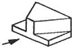
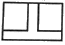
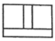
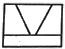
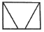
(정답률: 72%)
51. 빛에 대한 설명으로 옳은 것은?
- 자외선은 열적작용을 하므로 열선이라고도 한다.
- 가시광선의 범위는 380nm에서 780nm라고 한다.
- 가시광선에서 파장이 긴 부분은 푸른색을 띤다.
- 분광된 빛을 프리즘에 통과시키면 또 분광이 된다.
(정답률: 59%)
52. 자전거도로에서 해당 자전거의 설계속도가 30(킬로미터/시)일 경우 확보해야 할 최소 곡선반경(미터)기준은?(단, 자전거 이용시설의 구조ㆍ시설 기준에 관한 규칙을 적용한다.)
- 15
- 20
- 27
- 35
(정답률: 68%)
53. 투상에 사용하는 숨은선을 올바르게 적용한 것은?
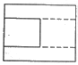
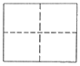
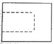
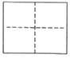
(정답률: 49%)
54. 설계자가 의뢰자에 대한 서비스 사항에 포함되지 않는 것은?
- 대상지의 분석과 평가
- 정확한 공사비의 내역산출
- 시공자의 선정
- 설계안의 작성
(정답률: 68%)
55. 자연생태계의 구조와 기능을 체계적으로 이해하는데 필요한 자연경관ㆍ생물분포 및 토지이용현황에 대한 정보를 1:25,000 지도상에 종합적으로 표시하여 우리국토의 보전과 개발을 위한 토대가 되는 자료는 어느 것인가?
- 녹지자연도
- 현존식생도
- 지형경관도
- 생태ㆍ자연도
(정답률: 70%)
56. A2제도지의 도면에 테두리를 만들 때 여백을 최소한 얼마나 두어야 하는가?(단, 도면을 묶지 않을 경우)
- 5mm
- 10mm
- 15mm
- 20mm
(정답률: 72%)
57. 정수비(整數比), 급수비(級數比), 황금비(黃金比)와 같은 비율과 도형상의 색채차라든가 질감에 있어서의 강약까지 포함하여 비례의 안정을 찾는 것을 무엇이라 하는가?
- 반복(反復)
- 대조(對照)
- 점층(漸層)
- 비대칭균형(非對稱均衡)
(정답률: 49%)
58. 이용자의 시각적 선호 또는 만족도는 다음 중 어느 개념에 속하는가?
- 행태
- 환경태도
- 환경지각
- 환경인지
(정답률: 46%)
59. 환경(environment)과 인간의 환경에 대한 시각선호도(visual preference)의 관계를 설명하는 다음 모형 중 옳은 것은?
- 환경자극 → 지각 → 인지 → 태도
- 환경자극 → 인지 → 지각 → 태도
- 환경자극 → 태도 → 지각 → 인지
- 환경자극 → 인지 → 태도 → 지각
(정답률: 60%)
60. 공원의 휴식공간에 설치하고자 하는 음수대(飮水臺)의 디자인에 영향을 주는 요소로 가장 거리가 먼 것은?
- 사용대상
- 사용목적
- 배수구
- 관리인의 유무
(정답률: 62%)
4과목: 조경식재
61. 식생조사 시 조사구역내의 개개의 식물 배분상태(군도)는 보통 몇 단계로 나누어 판정하는가?
- 5단계
- 6단계
- 7단계
- 8단계
(정답률: 49%)
62. 화서는 화축에 달린 꽃의 배열을 말한다. 밑에서 위로 향하는 꽃이 피는 무한화서(indeterminate inflorescence)와 식물종이 잘못 짝지어진 것은?
- 원추화서(panicle) : 쥐똥나무
- 미상화서(catkin) : 자작나무
- 총상화서(raceme) : 수수꽃다리
- 산방화서(corymb) : 산사나무
(정답률: 50%)
63. 다음 중 꽝꽝나무의 설명으로 옳지 않는 것은?
- 자웅이주이다.
- 학명은 Ilex crenataThunb. var. crenata 이다.
- 잎은 호생하고 넓은 타원형으로서 예두(銳頭)이며, 표면은 광택이 나고 짙은 녹색이다.
- 열매는 열개(裂開)하는 삭과((蒴果)로서 6~7월에 결실한다.
(정답률: 49%)
64. 식재를 하고자 할 경우 부등변삼각형식재는 다음 중 어느 식재수법에 해당되는가?
- 정형식재
- 자연풍경식재
- 자유식재
- 절충식재
(정답률: 78%)
65. 다음 중 수목의 특징 설명이 옳지 않은 것은?
- Abies koreana wilson는 낙엽활엽소교목으로 수형은 구형이다.
- Populus dilatata Aiton는 줄기가 곧추 자라고 가지가 빗자루 모양으로 좁게 퍼지며, 수피는 흑갈색으로 세로로 갈라진다.
- Prunus salicina Lindl. var. salicina의 꽃은 4월에 잎보다 먼저 피고 지름 2~2.2cm로 백색이며 보통 3개씩 달린다.
- Poncirus trifoliata Raf의 열매는 장과로 지름 3~5cm이며 노란색의 진한 향기가 있고, 수피는 짙은 녹색으로 가시가 발달했다.
(정답률: 48%)
66. 다음 [보기]가 설명하는 수종은?
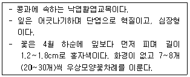
- Cercis chinensis
- Sophora japonica
- Wisteria floribunda
- Robinia pseudoacacia
(정답률: 50%)
67. 수목배식시 질감을 효과적으로 이용하여 실제 거리보다 멀리 느끼게 하기 위한 가장 적절한 배식 요령은?
- 수목의 색깔이 밝은 것을 중앙에 배치하고, 어두운 것을 가장자리에 배식한다.
- 관찰자의 전면에서부터 거친질감, 중간, 고운 질감의 순으로 배식한다.
- 화목류를 산발적으로 배삭하면 분산효과가 있어 멀리 보인다.
- 어떤 수목이든지 일단 심으면 모든 거리가 가깝게 느껴진다.
(정답률: 75%)
68. 퇴화종자(退化種子)에서 볼 수 있는 각종 증상이 아닌 것은?
- 효소활동 상실
- 종자 침출물 감소
- 호흡 감소
- 지방산 증가
(정답률: 34%)
69. 생울타리용 수종으로 일조가 부족한 곳에서도 가장 잘 자랄 수 있는 수종은?
- Taxus cuspidata Siebold & Zucc.
- Prunus yedoensis Matsum.
- Buxus Koreana Nakai ex Chung & al.
- Celtis sinensis Pers.
(정답률: 55%)
70. 양지식물 중 강한 빛에서 잘 자라지만 그늘 밑에서도 상당히 잘 자라는 능성음지식물(能性陰地植物)에 해당하는 종은?
- Populus alba L.
- Larix kaempferi Carriere
- Betula platyphylla var. japonica Hara
- Acer palmatum Thunb.
(정답률: 39%)
71. 다음 중 천이의 순서가 올바르게 나열된 것은?
- 나지 → 일년생초본 → 다년생초본 → 양수관목림 → 양수교목림 → 음수교목림
- 나지 → 일년생초본 → 다년생초본 → 음수교목림 → 양수관목림 → 양수교목림
- 나지 → 일년생초본 → 다년생초본 → 양수교목림 → 양수관목림 → 음수교목림
- 나지 → 다년생초본 → 일년생초본 → 양수관목림 → 양수교목림 → 음수교목림
(정답률: 74%)
72. 식물생육에 필요한 환경요소 중 하나인 온도에 관한 설명으로 옳지 않은 것은?
- 식물의 개화와 결실에 매우 중요한 역할을 한다.
- 월적산온도는 월평균온도를 매월 합산한 값이다.
- 식물은 낮은 온도에 어느 정도 노출되어 있느냐에 따라 생존이 결정된다.
- 식물은 일반적으로 5℃이상이 되면 정상적인 생리활동을 시작되는데 이보다 높은 온도를 적산온도라 한다.
(정답률: 53%)
73. 다음 [보기]에 ( )에 해당하는 성분은?
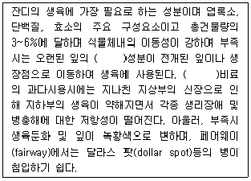
- P
- N
- Ca
- K
(정답률: 50%)
74. 다음 중 뿌리가 가장 얕게 뻗는 천근성 수종은?
- Abies holophylla Maxim.
- Zelkova serrata Makino
- Daphniphyllum macropodum Miq.
- Robinia pseudoacacia L.
(정답률: 48%)
75. 다음 중 Abies holophylla에 대한 설명으로 틀린 것은?
- 잎 뒷면의 기공조선이 4줄이다.
- 오대산 월정사 진입로에 열식되어 있다.
- 종명은 그리스어의 holos와 phyllon의 합성어이다.
- 수고 20~40m에 달하는 고산성상록침엽교목으로서 풍치수로 흔히 식재된다.
(정답률: 59%)
76. 다음 중 이른 봄에 산에서 가장 먼저 꽃이 피고, 가을철 황색단풍이 특징인 나무는?
- Ilex integra Thunb.
- Cercis chinensis Bunge
- Lindera obtusiloba Blume
- Viburnum opulus var. calvescens(Rehder) H.Hara
(정답률: 49%)
77. 다음 중 초록빛 수피를 가진 수종은?
- Firmiana simplex W.F.Wight
- Paulownia coreana Uyeki
- Chaenomeles sinensis Koehne
- Ulmus davidiana var. japonica Nakai
(정답률: 51%)
78. 개체군 생장곡선과 환경저항에 대한 설명으로 옳은 것은?
- 지속적인 J자형의 생장은 규칙적으로 반복된다.
- 특정한 환경하에서 일정한 밀도를 유지하는 생장곡선을 J자형 생장곡선이라 한다.
- J자형 생장곡선에서 증가율을 빠르게 하는 것은 환경적 제약 조건 때문이다.
- J자형 생장곡선의 형태로 개체군이 끊임없이 증가하는 것은 자연상태에서는 거의 불가능하다.
(정답률: 44%)
79. 다음 조경공사 표준시방서상의 수목 및 잔디관련 내용 중 옳지 않은 것은?
- 도입잔디는 현지의 제반 여건에 따라 감독자와 협의하여 종자를 선정하며 발아율 80% 이상, 순량률 98% 이상 이어야 한다.
- 수목의 표준적인 뿌리분의 크기는 근원직경의 4배를 기준으로 하며, 분의 깊이는 세근의 밀도가 현저히 감소된 부위로 한다.
- 수목재료가 포트, 콘테이너 등의 용기 재배품인 경우에는 지정규격에서 10%범위까지를 기준으로 채택할 수 있다.
- 특별시방서에 명시가 없을 경우 공사에 지장이 되는 기존 식생은 제거하는 것을 원칙으로 한다.
(정답률: 64%)
80. 다음 장미과(科)수목 중 Malus 속에 해당되는 것은?
- 돌배나무
- 아그배나무
- 마가목
- 산사나무
(정답률: 46%)
5과목: 조경시공구조학
81. 다음은 고저측량에서 기고식 야장기입의 일부이다. A와 B점의 고저차이는 얼마인가?
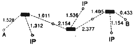
- +1.266
- -1.266
- +1.424
- -1.424
(정답률: 53%)
82. 유속은 지표면이나 관의 내부 조건에 따라 크게 영향을 받는다. 표면의 거친 정도를 표시하는 용어는 다음 중 어느 것인가?
- 수로의 동수구배
- 유적
- 경심
- 조도(粗度)계수
(정답률: 58%)
83. 다음 중 배수의 필요성을 결정하는 요소에 해당되지 않는 것은?
- 토지이용
- 인구밀도
- 지형
- 지면 마감상태
(정답률: 64%)
84. TQC를 위한 7가지 도구 중 다음 설명에 해당하는 것은?
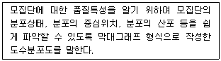
- 체크시트
- 파레토도
- 특성요인도
- 히스토그램
(정답률: 74%)
85. 목재는 같은 재료일지라도 탈습과 흡습에 따라 평형함수율이 달라지며 평형함수율은 탈습에 의한 경우보다 흡습에 의한 경우가 낮다. 이러한 현상을 무엇이라 하는가?
- 이력현상
- 동적평형현상
- 기건수축현상
- 목재의 이방성
(정답률: 32%)
86. 한중콘크리트에 관한 설명으로 옳지 않은 것은?
- 하루의 평균기온이 4℃ 이하가 예상되는 기상조건에서는 한중콘크리트로 시공한다.
- 콘크리트를 비비기 할 때 재료를 가열할 경우, 물 또는 골재를 가열하는 것으로 하며, 시멘트는 어떠한 경우라도 직접 가열할 수 없다.
- 한중콘크리트에는 공기연행 콘크리트를 사용하는 것을 원칙으로 한다.
- 추위가 심한 경우 또는 부재 두께가 얇은 경우 소요의 압축강도가 얻어질 때까지 콘크리트의 양생온도는 0℃이상을 유지하여야 한다.
(정답률: 52%)
87. 수준측량에서 전시와 후시의 시준거리를 같게 함으로써 소거할 수 있는 오차는?
- 시차에 의해 발생하는 오차
- 표척 눈금의 오독으로 발생하는 오차
- 표척을 연직방향으로 세우지 않아 발생하는 오차
- 시준축이 기포관축과 평행하지 않기 때문에 발생하는 오차
(정답률: 29%)
88. 다음 중 굴취시 흉고직경 기준에 의하여 품셈을 산정하는 수종은?
- 칠엽수
- 이팝나무
- 대추나무
- 모감주나무
(정답률: 52%)
89. 어떤 단지에 있어 건물 50%, 도로 30%, 녹지 20%의 지역인 경우 우수유출계수가 각각 0.90, 0.80, 0.10인 경우 평균유출계수는?
- 0.5
- 1.0
- 0.71
- 0.92
(정답률: 62%)
90. 다음 중 조경공사의 특성 설명으로 가장 거리가 먼 것은?
- 공사종류는 다양하지만 각 공사별로 규모는 크지 않다.
- 현장의 상황에 따라 조정할 경우가 많다.
- 생명체를 다루는 공사이므로 다른 공사에 우선하여 시공하여야 한다.
- 전문공사는 조경식재와 조경시설물 설치공사로 구분된다.
(정답률: 71%)
91. 자동차가 회전 할 때 원심력에 저항할 수 있도록 편경사를 주어야 하는데 횡활동 미끄럼마찰계수가 0.15, 설계속도가 100km/hr, 곡선반경이 50m 일 때 편경사는?
- 0.24
- 0.44
- 0.82
- 1.42
(정답률: 38%)
92. 내열성이 크고 발수성을 나타내어 방수제로 쓰이며 저온에서도 탄성이 있어 gasket, packing의 원료로 쓰이는 합성수지는?
- 페놀수지
- 실리콘수지
- 에폭시수지
- 폴리에스테르수지
(정답률: 55%)
93. 다음 그림과 같은 부정정 보에서 C점에 작용하는 휨 모멘트는?
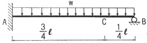
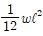
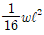
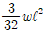
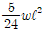
(정답률: 58%)
94. 다음 중 옥상조경 시공에 있어서 가장 우선적으로 시공하여야 할 공정은?
- 토양층 조성
- 방조층 설치
- 방수층 설치
- 배수층 설치
(정답률: 59%)
95. 덤프트릭의 1회 사이클 시간(Cm)을 결정할 때 포함되는 시간이 아닌 것은?
- 적재시간
- 왕복시간
- 기어변속시간
- 적재함 덮개 설치 및 해체시간
(정답률: 53%)
96. 동결된 지반이 해빙기에 융해되면서 얼음 렌즈가 녹은 물이 빨리 배수되지 않으면 흙의 함수비는 원래보다 훨씬 큰 값이 되어 지반의 강도가 감소하게 되는데 이러한 현상을 무엇이라 하는가?
- 동상현상
- 연화현상
- 분사현상
- 모세관현상
(정답률: 63%)
97. 밑변 6cm, 높이 12cm인 삼각형의 밑변에 대한 단면 2차 모멘트의 값은?
- 216cm4
- 288cm4
- 864cm4
- 1728cm4
(정답률: 44%)
98. 건설 공사시에 발생하는 백화방지 대책으로 옳지 않는 것은?
- 수용성 염류가 적은 소재를 사용한다.
- 흡수율이 작은 벽돌이나 타일을 사용한다.
- 줄눈 모르타르의 단위시멘트량을 높게 한다.
- 벽돌이나 줄눈에 빗물이 들어가지 않는 구조로 한다.
(정답률: 71%)
99. 제한적 평균가 낙찰제에 대한 설명으로 옳지 않은 것은?
- 부찰제로도 불린다.
- 낙찰적격자가 1인인 경우에는 무효로 한다.
- 중ㆍ소 건설업체에게 수주기회를 부여한다.
- 건설업체의 과도한 경쟁으로 인한 덤핑입찰을 방지하고 적정이윤을 보장할 수 있다.
(정답률: 66%)
100. 포졸란 반응의 특징이 아닌 것은?
- 블리딩이 감소한다.
- 작업성이 좋아 진다.
- 초기강도와 장기강도가 증가한다.
- 발열량이 적어 단면이 큰 대형 구조물에 적합하다.
(정답률: 55%)
6과목: 조경관리론
101. 자연공원의 모니터링에 대한 설명 중 틀린 것은?
- 영향을 유효 적절히 측정할 수 있는 지표를 설정해야 한다.
- 측정단위들의 위치설정은 등간격으로 분산되어야 한다.
- 측정기법은 신뢰성이 있고 민감해야 한다.
- 영향에 대한 시각적 평가, 물리적 자원의 변화측정을 통해 이루어진다.
(정답률: 63%)
102. 기공의 개폐에 관여하는 다량원소는?
- N
- P
- K
- Ca
(정답률: 45%)
103. 제초제의 선택성에 관여하는 생물적 요인이 아닌 것은?
- 잎의 각도
- 제초제 처리량
- 잎의 표면조직
- 생장점의 위치
(정답률: 59%)
104. 조경관리에 있어서 안시타인이 설명한 주민참가 과정에 대한 3단계의 발전 과정이 옳은 것은?
- 비참가→형식적 참가→시민권력의 단계
- 시민권력의 단계→비참가→소극적 참가
- 소극적 참가→적극적 참가→시민권력의 단계
- 형식적 참가→소극적 참가→적극적 참가
(정답률: 57%)
1⑤. 다음 중 불완전변태의 설명으로 옳은 것은?
- 번데기 과정이 없다.
- 풀잠자리는 불완전변태를 한다.
- 변태를 성공적으로 하지 못한 경우에 해당한다.
- 딱정벌레목에서 불완전변태를 하는 경우가 있다.
(정답률: 70%)
106. 퍼트(PERT)에 관한 설명 중 틀린 것은?
- CPM은 PERT와 함께 네트워크식 공정관리의 일종이다.
- 효율적인 작업순서의 관계를 정할 수 있다.
- 한 공정의 지연이 타 공정 혹은 전체 공정에 미치는 영향을 나타낸다.
- 주목적은 공사비 절감을 위하여 필요한 공정관리이다.
(정답률: 65%)
107. 단풍나무 가지 부분에 암갈색의 병반이 생겨 점차 확대되며, 병반은 약간 움푹 들어가며 작은 소립이 많이 형성되고 심하면 고사하는 병은?
- 가지마름병
- 흰가루병
- 줄기마름병
- 자줏빛날개무늬병
(정답률: 64%)
108. 다음 녹병균의 포자형(spores type)에 속하지 않는 것은?
- 녹병포자
- 여름포자
- 자낭포자
- 담자포자
(정답률: 48%)
109. 도시공원내 식재된 수목관리와는 다른 자연공원내 수림지관리 고유 특성이라 보기 어려운 것은?
- 천연갱신의 유도
- 대부분 생태적 복원력에 의지
- 수목 생장에 따른 보식 및 갱신
- 식생천이계열의 존중
(정답률: 66%)
110. 공원내 쓰레기통을 추가 설치 하고자 한다. 설치장소 결정시 고려해야 할 요인으로 가장 거리가 먼 것은?
- 쓰레기의 회수율
- 사람의 동선 흐름
- 회수 체계
- 1일 쓰레기 회수빈도
(정답률: 55%)
111. 운영관리체계화의 부정적 요인으로 작용하는 것이 아닌 것은?
- 직원의 사기
- 규격화의 곤란성
- 이용주체의 다양화에 따른 예측의 의외성
- 조경공간의 주요 대상이 자연이라는 특성
(정답률: 59%)
112. 살충제 B 유제 50%를 0.⑤%(1000배액)로 1ha에 1000L살포 시에 필요한 원액량은?
- 100mL
- 500mL
- 1000mL
- 10000mL
(정답률: 54%)
113. 다음 중 식물체 부위의 이상비대 또는 이상증식 및 비정상적 생장과 관련된 병징이 아닌 것은?
- 무사마귀(clubroot)
- 더뎅이(scab)
- 잎오갈(leaf curls)
- 혹(galls)
(정답률: 46%)
114. 모과나무, 명자꽃, 사과나무류의 장미과 나무 가까이에 향나무를 심지 않는 이유는?
- 모과나무의 진딧물 벌레가 향나무에 옮기기 때문이다.
- 모과나무, 명자꽃의 향기를 향나무의 향기가 흡수하기 때문이다.
- 향나무는 붉은별무늬병(赤星病)의 중간 기주이기 때문이다.
- 모과나무, 사과나무의 흰가루병이 향나무로 옮기기 때문이다.
(정답률: 73%)
115. 다음 중 이식후 줄기에 새끼감기를 해줄 필요가 없는 나무는?
- 지하고가 낮고 가지가 많이 나 있는 나무
- 수피가 밋밋하고 얇은 나무
- 쇠약 상태에 빠져 있는 나무
- 노대목(老大木)이나 줄기가 상당히 굵은 나무
(정답률: 52%)
116. 요소(N 46%, 흡수율 83%)로써 유효질소 40kg을 충당할 경우 필요한 요소량은 약 몇 kg인가?
- 48.2
- 52.4
- 87.0
- 104.8
(정답률: 22%)
117. 다음 중 아스팔트 포장의 보수공법으로 가장 부적합한 것은?
- 패칭 공법
- 표면처리 공법
- 덧씌우기 공법
- 그라우딩 공법
(정답률: 59%)
118. 다음 중 사이고메터(shigometer)에 대한 설명으로 가장 적합한 것은?
- 식물 바이러스병의 진단에 이용되는 기기이다.
- 수목의 목재썩음병의 진단에 이용되는 기기이다.
- 수목의 선충(nematode)감염을 진단하는 기기이다.
- 수목의 파이토플라스마병의 진단에 이용되는 기기이다.
(정답률: 54%)
119. 조경공사 현장에서 재해발생의 경중, 즉 강도를 나타내는 척도로서 연간 총 근로시간 1000시간당 재해발생에 의해서 잃어버린 근로손실일수를 말하는 것은?
- 도수율
- 강도율
- 빈도율
- 천인율
(정답률: 56%)
120. 토양의 Laterite화 작용이 일어날 수 있는 조건은?
- 고온다우
- 한냉습윤
- 고온건조
- 한냉건조
(정답률: 47%)